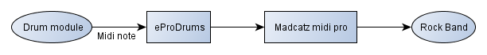
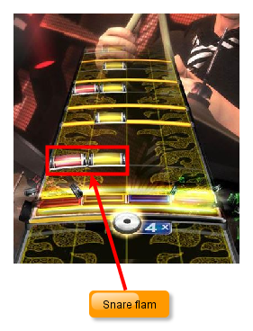
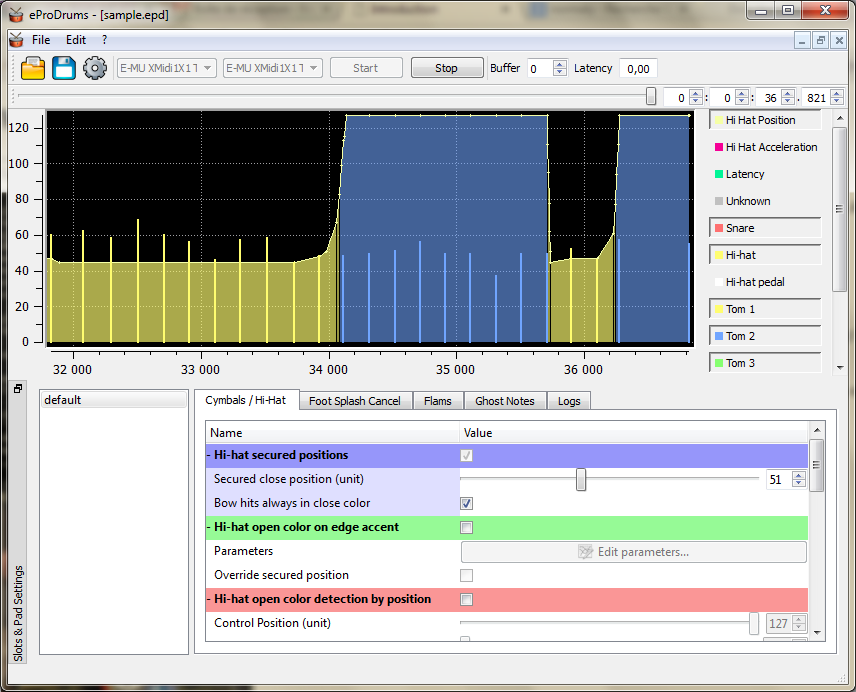
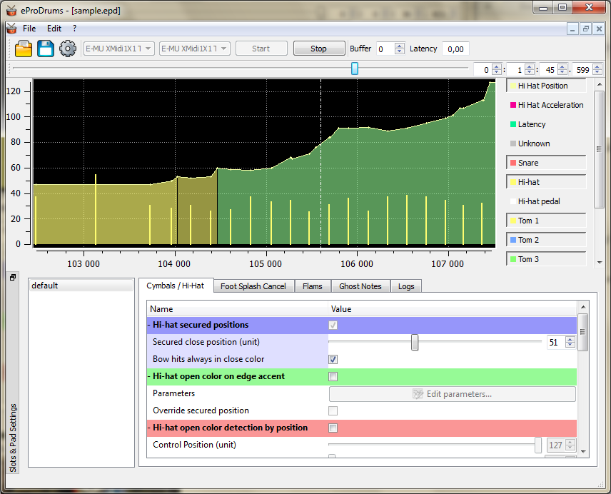
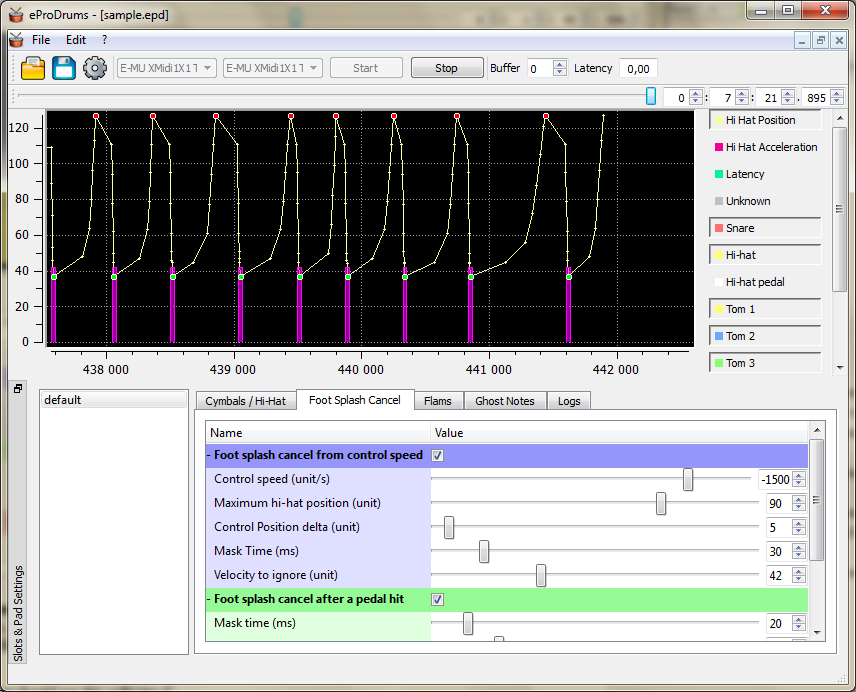

Introduction
What is this software ?
This software is a bridge between your electronic drum kit and the Rock Band Madcatz Midi Pro Adapter.
It reads midi notes sent by your drum kit, analyse your inputs, process/transform those notes and then sends new data to the Madcatz Midi Pro Adapter.

But why to analyse/transform your drum hits ? The main purpose is to translate some real drum techniques you can't do normally in the game (eg: flams, hi-hat close/half-open/open, ghost notes etc...)
A basic example are flams : in Rock Band, snare flams are charted in [red,yellow] pads (for a righty drummer), but if you want to do a real flam on your electronic snare you'll produce [red,red] notes instead of [red,yellow] and you will break the combo.

eProDrums can analyse your hits and transform your [red,red] notes into [red,yellow] notes and you won't break the combo by doing a real flam. Obviously, it can do more things. Actually the features are :
- Advanced Hi-Hat Settings : Blue note detection from hi-hat position or by studying the hi-hat control speed. The speed detection method allows you to play more naturally with open/close hi-hat. There is also a specific "half-open" state (in green, see below) detected when the hi-hat is in a specific zone during a specific time. When hi-hat is "half-open" all notes are yellow until the hi-hat is closed.
 
- Hi-Hat Foot Splash cancel : Only usefull for VH-11, VH-12 (or other same kind of eHiHat). Overhits caused by foot splashes are ignored. The filtering is done by studying speed and acceleration during a close movement and a mask window is created to ignore all hi-hat hits under a specific value.

- Flams detection : When you do a flam on the snare the software convert the flam in [red,yellow] (for a righty drummer). This feature is not limited to the snare, you can add flams detection on all elements (toms, hi-hat, cymbals).
- Ghost notes : It can be usefull if you play with your drum module sound and want to add ghost notes to easy songs. The software just ignores notes under a velocity threshold.
- Green to Yellow Crash conversion : In Rock Band, for a righty drummer, the left crash is often mapped to the yellow cymbal. If you have a left green crash on your set, this green crash can be converted automatically into a yellow crash. eg: If you hit both left and right green crash, one is converted to yellow cymbal. If you hit the ride and the left green crash, the crash is converted to yellow cymbal too.
- Curves Monitor : To help you in your settings, you can see your hits, the curve of the hi-hat controller (position, speed, acceleration), you can zoom in and zoom out and you can measure time windows.

Who should use this software ?
You should use this software if :
- You play with the sound of your electronic drum kit and thus you have to play as real as possible to sound correctly (flams, open hi-hat etc...)
- You don't play with the drum kit sound but you want to keep your playing as real as possible in a gaming configuration (flams, open hi-hat etc...)
- You just want to use the hi-hat feature (close/half/open)
- You have a Roland VH-11 or VH-12 and want to use them with Rock Band (close/half/open)
- You want to add ghost notes in the chart
- You are just curious...
Next